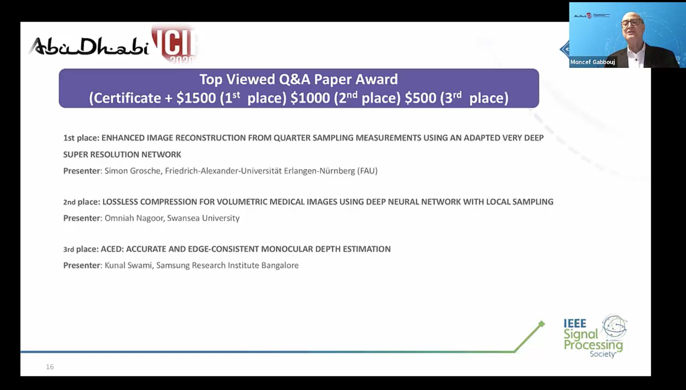

Lossless Compression For Volumetric Medical Images Using Deep Neural Network With Local Sampling
Omniah Nagoor, Joss Whittle, Jingjing Deng, Benjamin Mora and Mark Jones
Abstract
Data compression forms a central role in handling the bottleneck of data storage, transmission and processing. Lossless compression requires reducing the file size whilst maintaining bit-perfect decompression, which is the main target in medical applications. This paper presents a novel lossless compression method for 16-bit medical imaging volumes. The aim is to train a neural network (NN) as a 3D data predictor, which minimizes the differences with the original data values and to compress those residuals using arithmetic coding. We evaluate the compression performance of our proposed models to state-of-the-art lossless compression methods, which shows that our approach accomplishes a higher compression ratio in comparison to JPEG-LS, JPEG2000, JP3D, and HEVC and generalizes well.
Related Files
 Accepted manuscript
Accepted manuscript
 Presentation slides
Presentation slides
DOI
10.1109/ICIP40778.2020.9191031
https://dx.doi.org/10.1109/ICIP40778.2020.9191031
Citation
Omniah Nagoor, Joss Whittle, Jingjing Deng, Benjamin Mora and Mark Jones, Lossless Compression For Volumetric Medical Images Using Deep Neural Network With Local Sampling, 2020 IEEE International Conference on Image Processing (ICIP), Abu Dhabi, United Arab Emirates, 2020, pp. 2815-2819. https://dx.doi.org/10.1109/ICIP40778.2020.9191031
BibTeX
@inproceedings{LLCompressionNN,
author={O. H. {Nagoor} and J. {Whittle} and J. {Deng} and B. {Mora} and M. W. {Jones}},
booktitle={2020 IEEE International Conference on Image Processing (ICIP)},
title={Lossless Compression For Volumetric Medical Images Using Deep Neural Network With Local Sampling},
date={2020-10-25},
doi={10.1109/ICIP40778.2020.9191031},
pages={2815-2819},
}